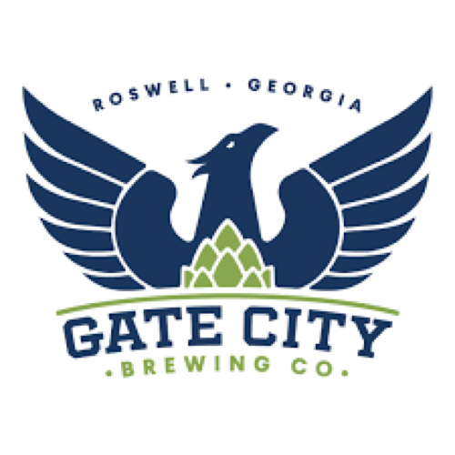
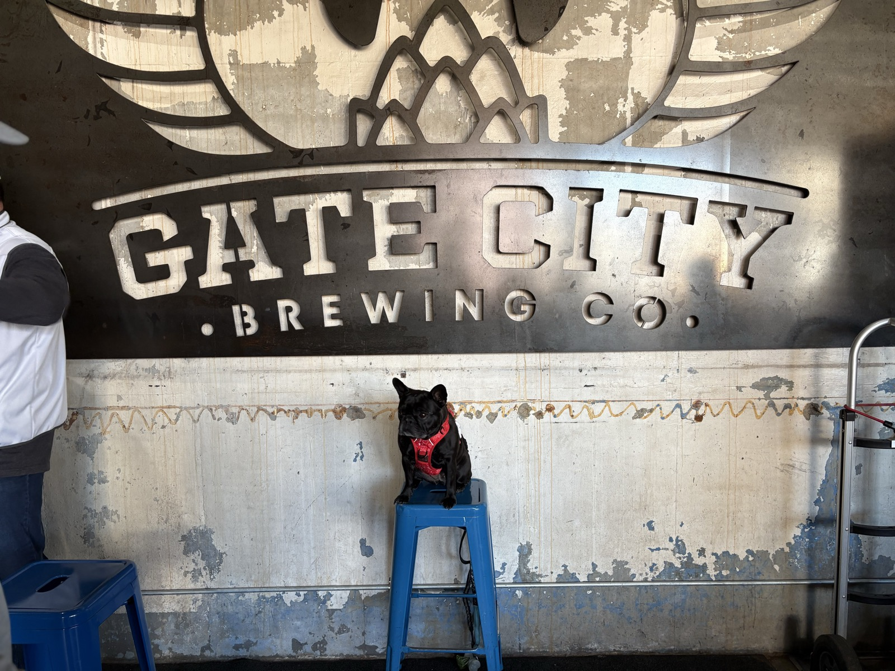

"Frenchie-approved? Double check! 🐾🍻"
It was a paws-itively toasty day in Atlanta when we trotted over to Gate City Brewing for the first time, and let me tell you—all of Atlanta and their dogs had the same idea! Located in the heart of Roswell, GA, this spot is prime territory for pups and their humans to sip, stroll, and socialize, thanks to that sweet, sweet open-container law.
Now, let's talk drinks—they've got the goods! My humans were thrilled to find not just a stellar beer lineup but also some top-tier craft cocktails for those who like to mix things up. The space? Absolutely massive! Perfect for zoomies, impromptu wrestling matches, and some good ol' fashioned butt-sniffing galore. Whether you're a sprinter or a sniffer, there's plenty of room to get your social on.
Speaking of VIP treatment, when we bellied up to the bar, the beertender was johnny on the spot with a treat just for me—now that's how you win over a discerning beer-hopping Frenchie! And talk about a dog party—Frenchies were out in full force. I made so many new friends, but Louie, buddy, you take the cake! Let's schedule a treat-and-greet soon, okay?
As for my humans, they gave high marks to Awe Juice, Pebbles, and a Bourbon cocktail that hit all the right notes. I didn't pay much attention—I was far too busy making friends, zooming across the patio, and perfecting my brewery ambassador duties.
If you find yourself in the East Cobb area, put Gate City on your must-visit list. Treats? Check. Good vibes? Check. Space for zoomies and butt-sniffing? Oh, you bet! Frenchie-approved? Double check! 🐾🍻
